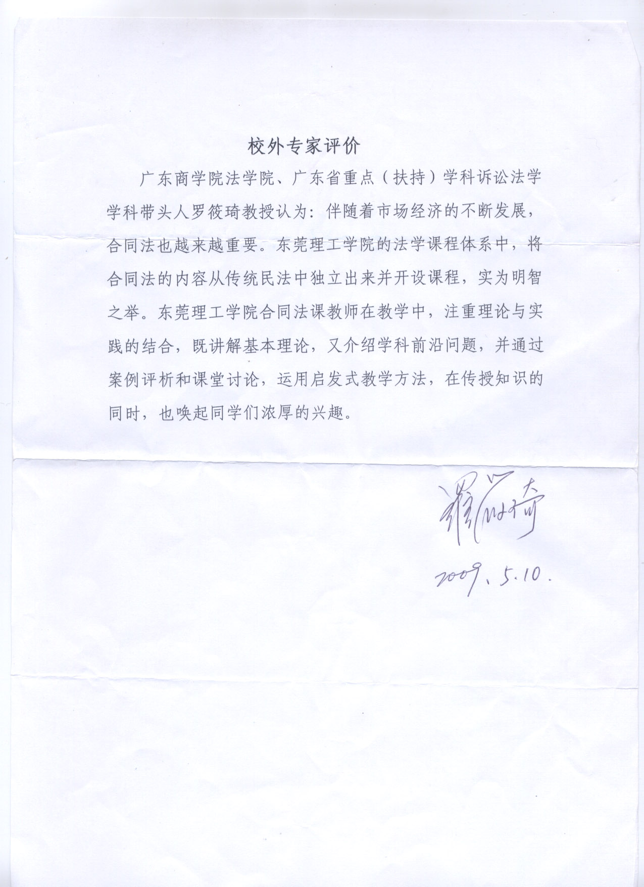
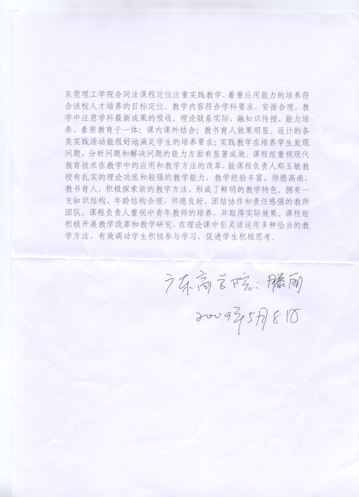
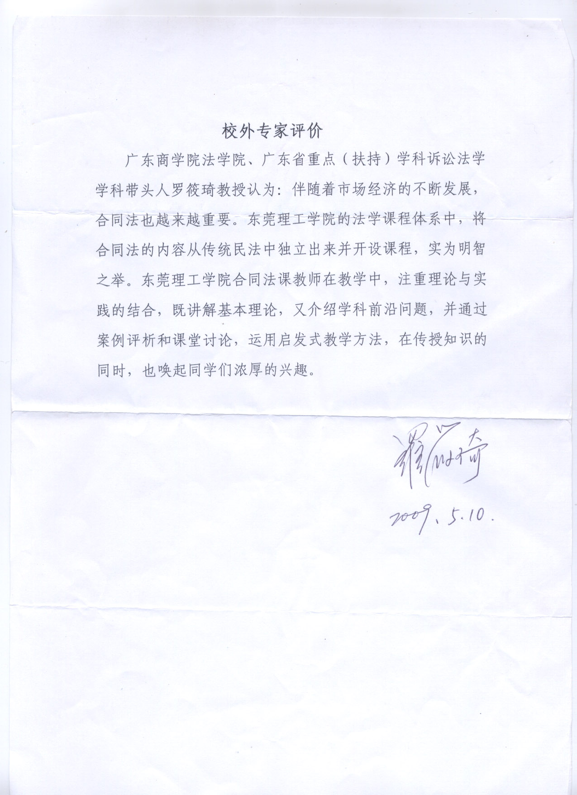
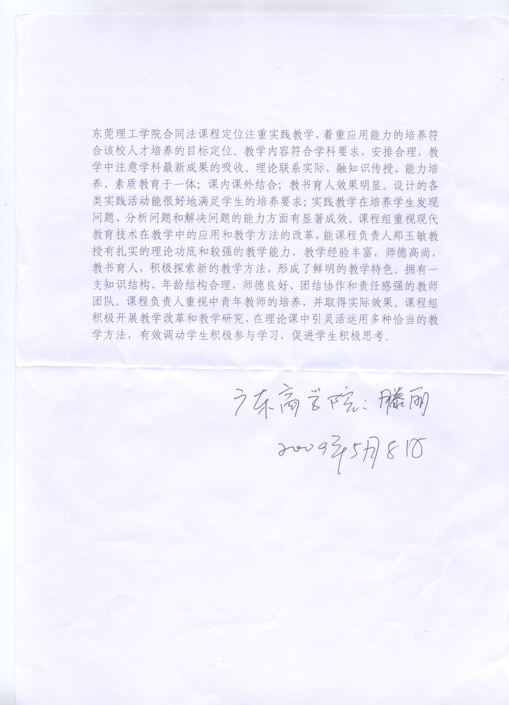

教学效果 校外专家评价 校内督导评价 教师自我评价 校内学生评价 社会评价 教学评估及相关文件 首页· 教学效果· 校外专家评价 校外专家评价 1、广东计算机学院罗筱琦教授和滕丽教授对课程组的评价   2、校外专家华南理工大学苏国明教授对韩中节的评价 校外督导组（华南理工大学专家）评价苏国明教授对韩中节老师的评价：老师讲课采用PPT，但讲授时不依赖讲稿（或PPT），讲课很熟练，内容充实，多分析案例，结合实际较好，对难点（案例）分析清楚，讲授语言响亮清楚，讲授中时有提点，使学生应答，课堂气氛活跃，效果好，学生听课专心（除一个学生趴睡外），只是课间休息时稍延误了几分钟上课，望注意改正。
首页· 教学效果· 校外专家评价 校外专家评价 1、广东计算机学院罗筱琦教授和滕丽教授对课程组的评价   2、校外专家华南理工大学苏国明教授对韩中节的评价 校外督导组（华南理工大学专家）评价苏国明教授对韩中节老师的评价：老师讲课采用PPT，但讲授时不依赖讲稿（或PPT），讲课很熟练，内容充实，多分析案例，结合实际较好，对难点（案例）分析清楚，讲授语言响亮清楚，讲授中时有提点，使学生应答，课堂气氛活跃，效果好，学生听课专心（除一个学生趴睡外），只是课间休息时稍延误了几分钟上课，望注意改正。